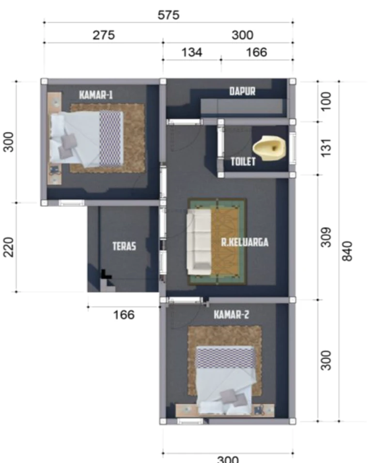

Mass-scale housing
Coordinate repeatable homes, layouts and building systems around the site, programme and needs of future residents.
Fjäll Group / Housing & workers’ accommodation
Fjäll Affordable Development
Mass-scale housing and workers’ accommodation through repeatable building systems, considered masterplanning and coordinated delivery.
Start a conversation01 / Our focus
FAD brings individual homes into a wider development ambition. We consider unit types, shared routes, infrastructure and community space together, connecting repeatable building systems with the needs of each site and programme.
Coordinate repeatable homes, layouts and building systems around the site, programme and needs of future residents.
Plan accommodation around everyday living, shared amenities, access and the needs of the workforce.
Consider unit types alongside shared spaces, circulation, infrastructure and phased delivery.
02 / A connected approach
Understand the site, residents, scale, infrastructure and programme priorities.
Coordinate unit types, community space, access and the building-system approach.
Agree dimensions, finishes and interfaces before sequenced component preparation and logistics.
Coordinate delivery and site assembly around the approved design, phasing and site conditions.
Scope, specifications, approvals and programme are confirmed for each project.

03 / From the Fjäll portfolio
A regional-government programme of more than 250 homes brings repeatable systems into a wider community ambition.
Explore the project View the full Fjäll portfolioYour next project
Share your location, intended scale and who you are building for. We’ll start with the needs of the project.
Discuss your housing programme